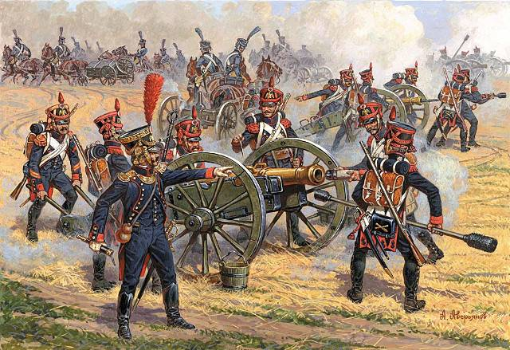

Combat module alpha
Combat happens when people disagree violently, and is resolved in the following way, usually involving bruises, blood, and death.

The following are core concepts of the combat system.
- Combat takes place on a 1d battle mat called the Battleground. You either push forward, or fall back.
- Combat has two measures of time. Rounds, which consists of an arbitrary amount of Turns
- Combatants can only specify their actions at the beginning of each Round, while during this time, their actions each Turn is dictated by their planning
- Combat ends when at the end of a Round either one side is defeated, or has fled the battleground
- Exploiting an enemys weaknesses is important to fighting effectively
- Likewise, using terrain, features, and hazards of the battlegrounds is equally important
- Combatants are likely to be permanently damaged, die, or be kidnapped in the aftermath of combat, players, and their opponents alike
The Battleground
The Battleground consists of 11 tiles, where two sides can duke it out. Each tile will have a width and a type of terrain, as well as possibly a feature, and a hazard
When the battle starts the GM first decides on the position of the two opposing parties, depending on the scene.

Movement
Combatants may move 1 tile at the start of every round, then 1 tile at the start of each turn.
These rules apply to movement
- Conscious combatants of opposing sides may not occupy the same tile.
- Combatants of the same side may occupy the same tile, and move freely through tiles occupied by their allies.
- A combatant cannot move past an opponent.
Depending on the combatants perks and/or equipment, they may be able to move further, or ignore some rules regarding invalid movement. These rules are also designed for mainly grounded combat. Aerial combat, or underwater combat would have different rules for movement.
Terrain
The terrain of a tile may increase or decrease damage of incoming ranged attacks, as well as increase the amount of movement required to cross it.
When a tile has a terrain which requires 2 or more movements to cross, resolve it as it was two tiles, and keep track of the combatants progress.
Tile width
A tile can only contain an amount of characters less than or equal to its width.

Features
A tile feature can be anything from a watchtower, to abandoned house, or maybe a ballista. Features are used by combatants to fortify, or push hard from certain positions on the battleground, to setting devious traps.
Interaction
Each feature has its own usage, but they may only be interacted with before the start of a new Round.
All features have a requirement of how to interact with them, from an amount of combatants to be present, to a certain damage type to hit them.
Scouting
Some features are face down as combat starts, and will only be discovered when scouted. A hidden feature is scouted when a combatant stands on the same tile as it.
A combatant can spend turns to increase their scouting radius while stationary, moving will reset their extended scouting radius. For each turn scouting, the combatant will scout features one tile further away from them.
Hazards
A tile can be hazardous to combatants. It might be on fire, have puddles of corrosive acid, toxic gas, or deep chasms dangerously close to the battle.
Each hazard is unique, might have a duration of rounds it is present, and will make any combatants starting a turn on the hazard suffer its negative effects.
Some equipment, and incantations may create hazards on the battleground

Rounds and Turns
A round of combat is an amount of turns decided by both the fighting parties. A turn of combat is enough time for every combatant involved to move, and perform an attack.

Planning
At the start of each round, players plan what to do with the turns during the round.
This mainly consists of choosing a target to attack, a type of attack to use, and a target tile to move to.
Execution
Each turn, the combatant will act out the plan as good as they can.
Commitment
After planning their moves at the start of each combat round, the players must decide, and commit to how many turns they wish to fight, a number between 1-5. Depending on the setup for the combat, eg if the fight is straightforward, or if one of the parties are ambushed or not, as well as the enemy group, this will be resolved in different ways.
Fair fight
If there is no ambush, the round will last for as long the players want to fight, -1 if the enemies prefer less turns, or +1 if the enemies prefer more turns.
Ambush
During an ambush, the first round lasts for as long as the ambushing party wants. In addition, the ambushers may decide to surround their enemies, putting them in the center of the battleground, and the ambushers on the edges.

Attacks
Attacks are basic offensive actions taken to hurt an enemy combatants. Attacks in combat hit by default.
All attacks deal three or more dice of damage. The amount of faces on the standard three dice are based on the combatants weapon, their familiarity with that specific weapon, and their experience level.
Melee
Melee attacks can only be made onto adjacent tiles. They are performed each turn.
Ranged
Ranged attacks can be made onto any tile of the battleground unless otherwise specified by the weapon. Ranged attacks must be prepared, so they are completed every other turn.
Physical or Magical
Weapons are deal physical or magical, depending on their make. This is tracked on the weapon card.
Weapon break
When victim to an attack, a combatant may choose that any of their held weapons or shields break, to completely nullify the damage.
Damage
Weapon type
Weapons are divided into the four classes shown below. These classes encompass all weapons from clubs, to flaming swords, and machine guns.
Weapon type is shown on the weapon card.
Crude
Martial
Enchanted
Hi-Tech
Skill
A characters skill with the individual weapon affects their efficiency greatly, and can turn any weapon lethal.
Skill is tracked on the weapon card.
New
Experienced
Skilled
Expert
Perfection
Level
The characters general experience level weighs in on how much damage they do.
Level is tracked on your character sheet.
Nobody
Exceptional
Heroic
Legendary
Diety
Sustaining damage
When attacked, combatants take damage
Endurance
Endurance is a measure of how combat ready a character is. The more damage comes their way, the more endurance is spent to dodge or deflect that damage, until they are finally hit an suffer wounds.
As endurance reaches 0, it can be reduced no further, and instead the character suffers wounds, with one exception.
If any damage would result in a negative endurance less than or equal to a combatants negative max endurance, they die instantly.
Armor
Characters and creatures are either unarmored, wear armor, or have natural armor.
When attacked, each die rolled for the attack is reduced by the armor value of the victim.
If wearing armor, and all dice roll the exact armor value, the armor is damaged. Mark one usage from the armor.
Wounds
Each time a combatant is damaged when at 0 endurance they suffer a wound. The amount of wounds sustained have these effects.
Wounded
Unconscious
Dead
Resolving the turn
The turn is resolved in the following manner
- Each melee combatant chooses a target in range, prioritizing their planned target. If the planned target is out of range, they attack a random target.
- All combatants move.
- All melee combatants attack. Melee targets which have moved out of range causes the attack to miss.
- All unprepared ranged attackers prepare an attack
- Prepared ranged attackers attack
- Force is calculated where there are opposing fronts.

Weaknesses
All weapons can deal damage of one or more damage types. All combatants have one or more weakness to these damage types. Figuring out an opponents weakness can be key to winning a battle
When dealing damage to an opponent with a damage type they are weak against, you add the max value of your weapon dice to the attack result. Also, armor does not protect against attacks exploiting a weakness.
Damage types
Slashing
Bludgeoning
Piercng
Accurate
Explosive
Arcane
Holy
Occult
Burning
Freezing
Shocking
Conditions
Conditions are applied as an opponent is Overtaken, and last until the end of the round.